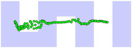
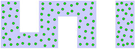

Neural gas is a one of method for competitive learning.
This algorithm can be used for example in Machine vision. Main task of this school project
is to implement this algorithm in C language and to optimize it for Cell Broadband engine.
Algorithm description
In general, input of this algorithm is large set of points in space that describe any area of space.
The output of this algorithm is significantly smaller set of point in space that describe the same
area of space as input points.
At the start of algorithm, set of new points (neurons) is generated. The positions of neurons are
generated randomly but its in the same space as input points. So we have to find minimal and maximal
values of input points in all dimensions before neurons positions generation.
The algorithm then works iteratively - in each iteration we compute distance between each neuron
and each input point. According to this distances we move all neurons.
|  |
 |
| Initial cover |
Final cover (~after 28000 iterations) |
Implementation main idea
We implemented some functions that enable easy SPU processing of arrays that are located in main memory. These functions move sections of main memory to local memory of SPU using DMA transfers. Then user defined function is called for each element section of local copy of processing array. The user defined function retrieves number of elements that are curently located in local memory. The user defined functions can change content of array elements - then moving of cached data back to main memory (using DMA) is needed.
Headers of this supporting functions (detail description of this function in code documentation):
void ReadInputs(InternalData_SPU* internal, void (handler(InternalData_SPU*, int)));
void ReadAndWriteNeurons(InternalData_SPU* internal, int overlap, void (handler(InternalData_SPU*, int)));
The biggest difference between PC (PPU) and SPU implementation is that instead of for-cycles (it is the core of Neural Gas algorithm) in PPU implementation, in SPU implementation there are functions described above and for-cycles are in this functions. The second big difference is that we used SIMD instructions for all vector-based operations.